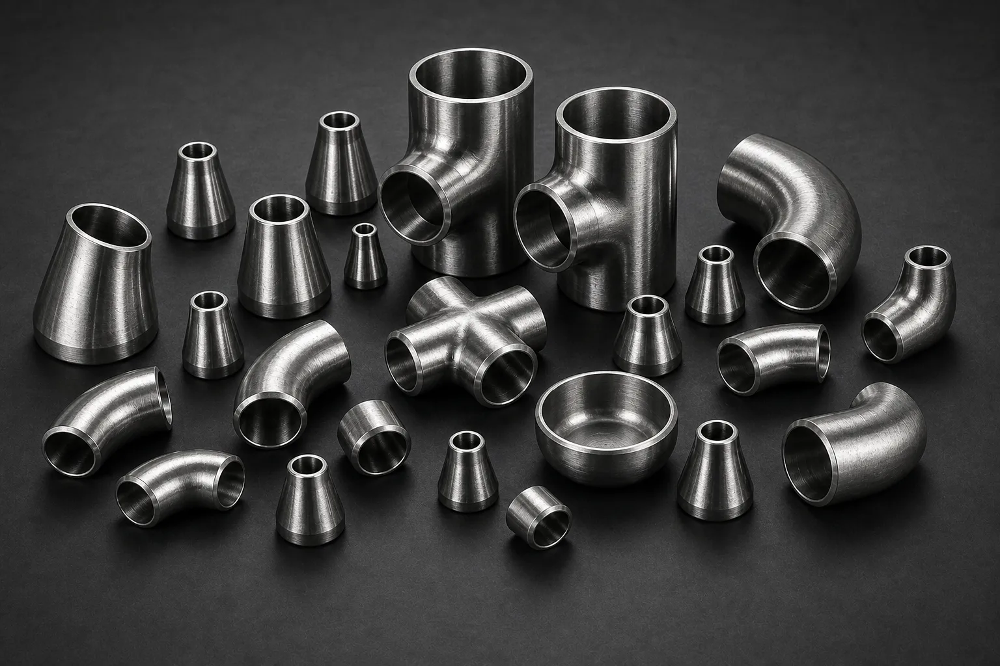

Gururaj Infradesigns supplies Nickel Alloy Pipe Fittings in Inconel, Incoloy, Hastelloy, Monel, Alloy 20, Nickel 200 grades including elbows, tees, reducers, pipe caps, and stub ends for chemical processing, offshore, marine, and industrial piping applications.
Gururaj Infradesigns is a trusted Nickel Alloy Pipe Fittings Manufacturer in India, supplying high-performance piping components designed for corrosive, high-temperature, and demanding industrial environments. Nickel alloy pipe fittings are widely used where conventional stainless steel and carbon steel materials may not provide adequate resistance to aggressive chemicals, seawater, acids, or elevated temperatures.
As a leading Nickel Alloy Pipe Fittings Supplier in India, we offer elbows, tees, reducers, pipe caps, stub ends, and crosses in various nickel alloy grades suitable for chemical processing, offshore, marine, power generation, pharmaceutical, and petrochemical industries. These fittings are engineered to deliver long service life, excellent corrosion resistance, and reliable performance in critical applications.

Nickel Alloy Pipe Fittings are manufactured using high-performance alloys containing nickel, chromium, molybdenum, copper, and other alloying elements that enhance corrosion resistance and mechanical properties. These fittings are commonly selected for applications involving aggressive chemicals, high-temperature service, seawater exposure, and harsh industrial environments.
Their ability to maintain structural integrity under challenging operating conditions makes them a preferred choice for critical process industries where reliability, safety, and long-term performance are essential.
| Parameter | Details |
|---|---|
| Product Name | Nickel Alloy Pipe Fittings |
| Product Types | Elbow, Tee, Reducer, Pipe Cap, Stub End, Cross |
| Material Grades | Inconel 600, 601, 625, 718, Incoloy 800, 800H, 800HT, 825, Hastelloy C22, C276, B2, Monel 400, Monel K500, Alloy 20, Nickel 200, Nickel 201 |
| Standards | ASTM, ASME, ANSI, MSS SP |
| Connection Types | Buttweld, Socketweld, Threaded |
| Size Range | ½" NB to 48" NB |
| Schedule Range | SCH 10 to SCH XXS |
| Manufacturing Process | Seamless & Welded |
| Testing | PMI, Hydro Test, Visual Inspection |
| Certification | EN 10204 3.1 / MTC Available |
Changes the direction of fluid flow within a piping system.
Creates branch connections between pipelines.
Connects pipes of different diameters.
Closes and seals the end of a pipeline.
Used with lap joint flanges for easy maintenance.
Creates four-way pipeline connections.
Pipe fittings are essential components that ensure efficient flow control and reliable pipeline connectivity. Selecting the correct fitting type helps optimize system performance, minimize pressure losses, and improve long-term operational efficiency.
| Connection Type | Description | Typical Applications |
|---|---|---|
| Buttweld | Permanently welded for leak-proof and high-strength joints. | Chemical Plants, Refineries, Offshore Systems |
| Socketweld | Pipe inserted into socket before welding. | High-pressure small-bore piping |
| Threaded | Mechanical threaded connection requiring no welding. | Utility and maintenance systems |
| Flanged | Bolted connection allowing easy dismantling and inspection. | Industrial process piping systems |
The connection method influences installation, maintenance accessibility, and pressure handling capability. Selecting the right connection type helps ensure long-term system reliability and operational safety.
Designed for highly corrosive process environments, Hastelloy C22 Pipe Fittings offer excellent resistance to oxidizing and reducing chemicals. These fittings are widely used in chemical processing plants, pollution control systems, and pharmaceutical facilities where long-term reliability and material stability are critical.
Known for its versatility across a broad range of corrosive media, Hastelloy C276 Pipe Fittings are commonly selected for handling acids, solvents, and aggressive industrial chemicals. Their ability to perform in harsh environments makes them a preferred choice for critical process piping systems.
With outstanding resistance to seawater and salt-laden environments, Monel 400 Pipe Fittings are extensively used in marine engineering, offshore platforms, desalination plants, and coastal infrastructure projects. The alloy also offers excellent mechanical strength and long service life in challenging conditions.
Combining the corrosion resistance of Monel 400 with higher mechanical strength, Monel K500 Pipe Fittings are suitable for applications involving heavy loads, wear, and demanding Pipe Fittings are suitable for applications involving heavy loads, wear, and demanding offshore service. They are frequently used in marine equipment, pumps, valves, and high-performance industrial systems.
Manufactured from commercially pure nickel, Nickel 200 Pipe Fittings provide excellent resistance to alkalis and a wide range of reducing chemicals. They are commonly utilized in chemical handling systems, food processing equipment, and applications requiring high material purity.
| Grade | Key Characteristics | Typical Applications |
|---|---|---|
| Hastelloy C22 | Excellent resistance to oxidizing and reducing chemicals, making it suitable for highly corrosive process environments. | Chemical Processing, Pollution Control Systems |
| Hastelloy C276 | Offers broad corrosion resistance along with excellent protection against pitting and crevice corrosion. | Acid Handling, Petrochemical Plants |
| Monel 400 | Provides outstanding resistance to seawater and chloride-rich environments with good mechanical strength. | Marine Equipment, Offshore Platforms |
| Monel K500 | Combines Monel 400 corrosion resistance with higher strength and improved wear resistance. | Offshore Equipment, Pumps & Valves |
| Nickel 200 | Commercially pure nickel with excellent resistance to alkalis and reducing chemicals. | Chemical Processing, Food Industry |
Each nickel alloy grade is developed for specific service conditions. Hastelloy grades are preferred for aggressive chemical environments, Monel grades perform exceptionally well in marine and offshore applications, while Nickel 200 and 201 are commonly selected for chemical processing systems requiring excellent corrosion resistance and material purity.
| Industrial Requirement | Nickel Alloy Advantage |
|---|---|
| Corrosion Resistance | Performs exceptionally well in aggressive chemical environments. |
| High Temperature Performance | Maintains stability under elevated temperatures. |
| Seawater Resistance | Suitable for offshore and marine applications. |
| Long Service Life | Helps reduce maintenance and replacement requirements. |
| Chemical Compatibility | Suitable for handling acids, alkalis, and process chemicals. |
| Critical Service Reliability | Supports demanding industrial operations. |
Nickel alloy pipe fittings are preferred for applications where standard materials may fail due to corrosion, temperature exposure, or aggressive process conditions.
Nickel alloy pipe fittings are extensively used in chemical plants handling acids, solvents, and aggressive process chemicals. Their superior corrosion resistance helps maintain safe and reliable operation under highly demanding service conditions.
Offshore platforms, shipbuilding projects, and desalination facilities rely on nickel alloy fittings because of their excellent resistance to seawater and chloride-rich environments. These properties help extend service life and reduce maintenance requirements.
Petrochemical facilities utilize nickel alloy piping components in process systems exposed to corrosive media and elevated temperatures. Their durability supports long-term operational reliability in critical process applications.
Nickel alloy pipe fittings are commonly used in thermal processing equipment, heat exchangers, and industrial systems where high-temperature strength and corrosion resistance are required for efficient performance.
Gururaj Infradesigns maintains inventory across multiple nickel alloy grades and specifications to support industrial procurement requirements. Our range includes elbows, tees, reducers, pipe caps, stub ends, and crosses suitable for highly demanding piping applications.
With a focus on product quality, timely deliveries, and dependable customer support, we serve EPC contractors, engineering companies, process industries, and industrial buyers seeking reliable pipe fitting solutions for critical projects.
At Gururaj Infradesigns, quality is an integral part of our manufacturing and supply process. Our nickel alloy pipe fittings are produced using carefully selected raw materials and undergo inspections for dimensional accuracy, material integrity, and overall performance.
As an ISO Certified Company, we are committed to maintaining consistent quality standards and supplying dependable piping solutions that meet industrial expectations.
Industrial piping systems operating in corrosive and high-temperature environments require components that can consistently perform under challenging conditions. Gururaj Infradesigns supplies nickel alloy pipe fittings engineered to deliver durability, reliability, and long service life across critical industrial applications. Our commitment to quality, technical expertise, and dependable supply enables customers to source high-performance piping solutions with confidence for complex industrial projects worldwide.